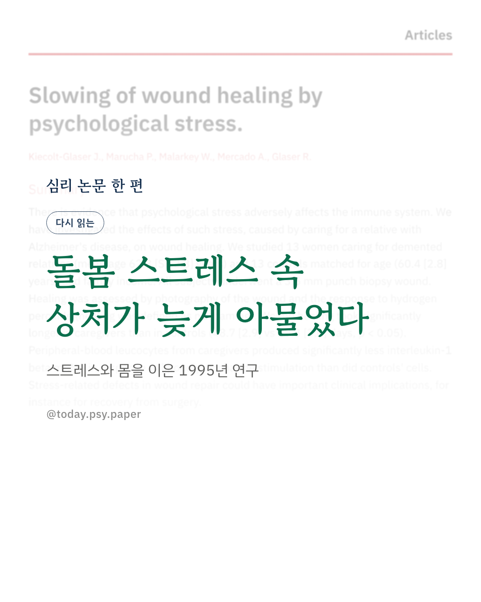
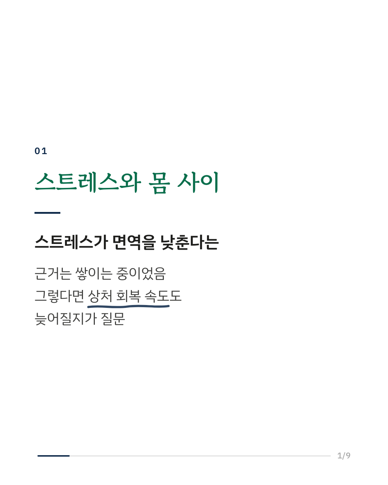
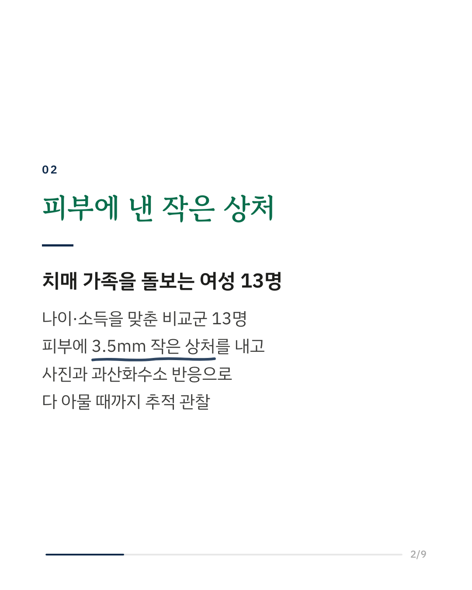
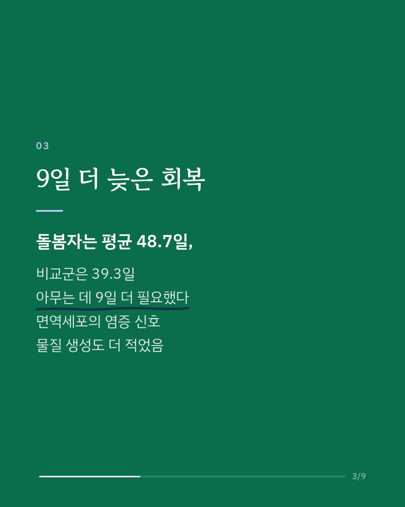
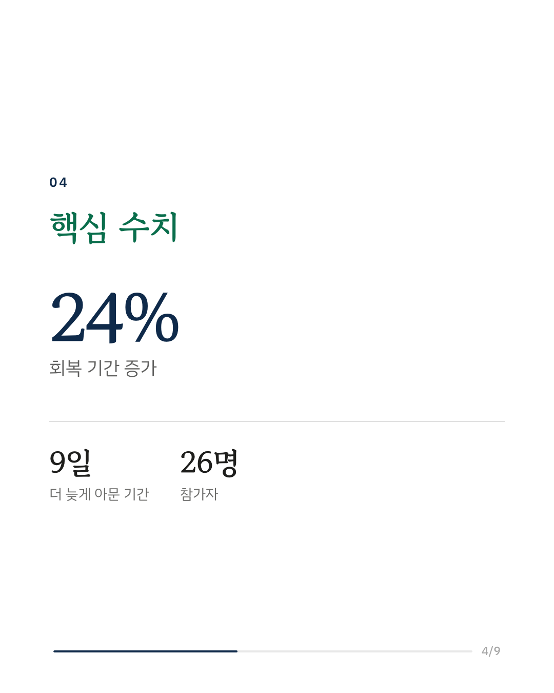
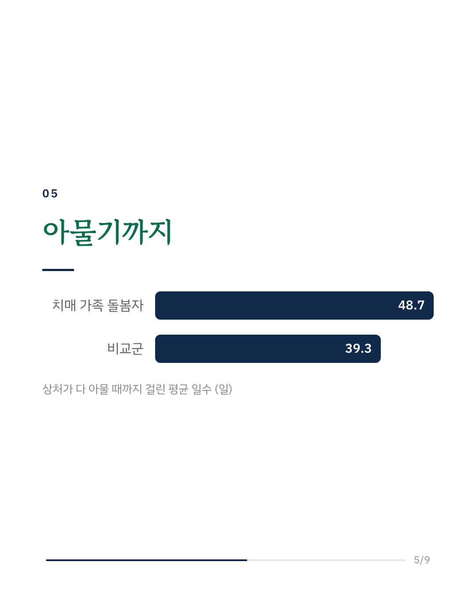
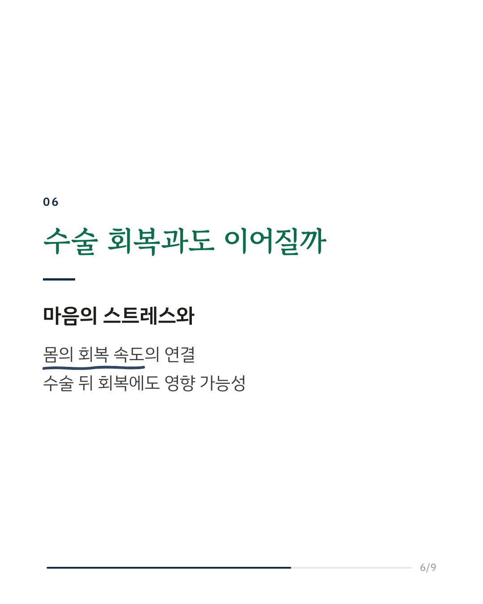
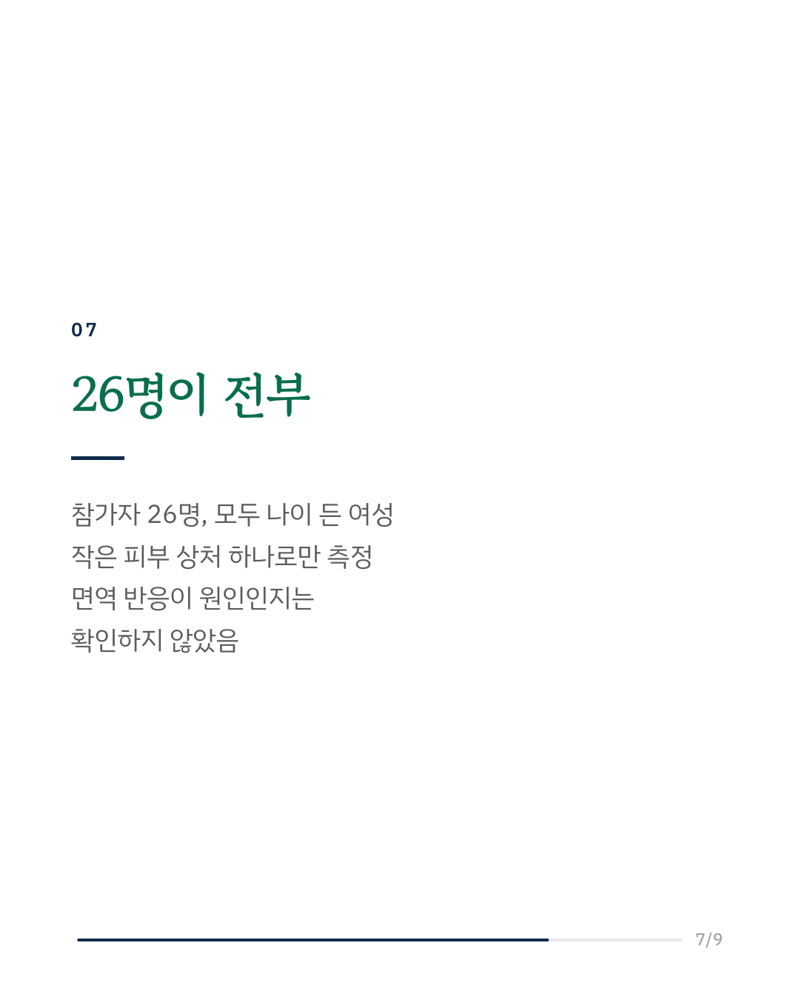
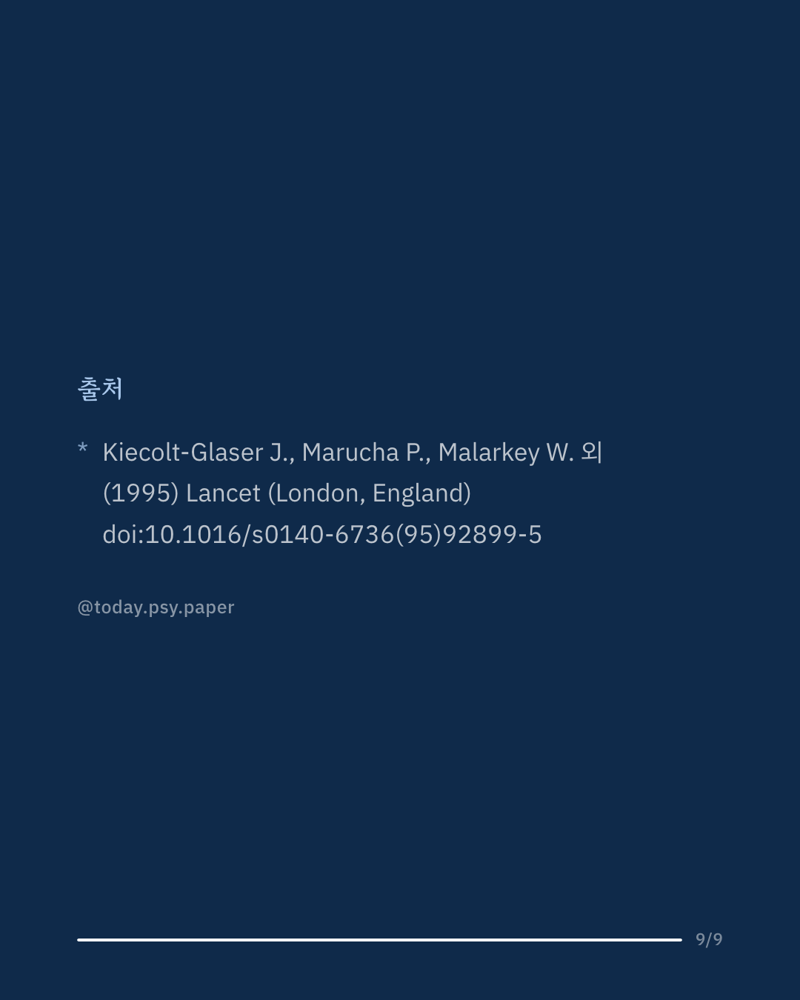

치매 가족을 오래 돌보는 일은 큰 스트레스입니다. 1995년 이 연구는 그런 만성 스트레스가 몸의 상처 회복 속도와도 관련이 있는지 확인했습니다. 연구진은 치매 가족을 돌보는 여성 13명과 나이·가계 소득을 맞춘 여성 13명의 피부에 똑같이 3.5mm 크기의 작은 상처를 냈습니다. 그리고 사진과 과산화수소 반응으로 상처가 다 아물 때까지 추적 관찰했습니다. 돌봄자의 상처는 평균 48.7일, 비교군은 39.3일 만에 아물었습니다. 돌봄자 쪽이 9일가량, 약 24% 더 오래 걸린 셈입니다. 돌봄자의 혈액 면역세포는 자극을 받았을 때 염증 신호 물질(인터루킨-1β)도 더 적게 만들었습니다. 연구진은 이 결과가 수술 뒤 회복 같은 임상 상황과도 관련될 수 있다고 말합니다. 다만 참가자가 나이 든 여성 26명뿐이었고, 면역 반응이 실제로 회복을 늦춘 경로인지는 확인하지 않았습니다. 마음의 스트레스가 몸의 회복과 이어진다는 생각을 실험으로 처음 보여 주면서, 이 분야를 지금 모습으로 만든 논문입니다. 출처: Lancet (1995), 'Slowing of wound healing by psychological stress.' DOI: 10.1016/s0140-6736(95)92899-5 #임상심리 #정신건강정보 #심리학연구 #논문리뷰 #스트레스 #치매돌봄 #가족돌봄 #정신신경면역학
python3 publish.py 7475659